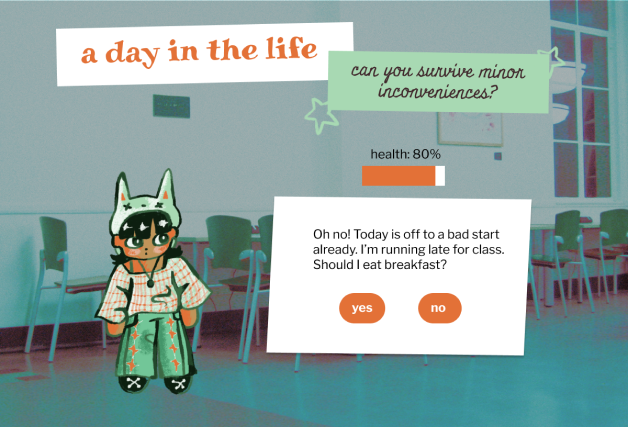
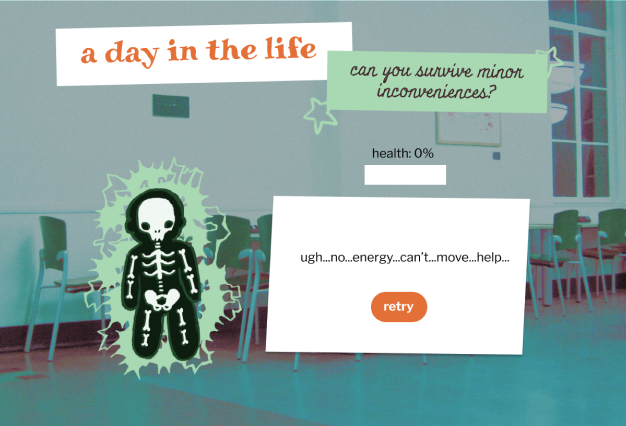

Outline
What the user should understand in the first 5~ minutes:
- They’re trying to make the right decisions to preserve their health
- They should be watching the health bar after making a decision
- The goal is to make it to the end with health remaining.
What the user should understand during the rest of the time:
- If they select the wrong option or sequence of options, they may die
- The game has to be restarted if they die
Keyfindings
2/3 users demonstrated that they received all of the above information based on how they played the game. The third user indicated that they believed choosing the wrong choice would automatically kill them, so more detailed instructions should be written to indicate that different choices cause different damage.
Users indicated that they want a bit more stimulation in the game, such as background music or a congratulations overlay that provides more positive feedback.
Users
My audience is likely going to be college students who enjoy gaming. All of my users fit this profile.
User 1: Serena Cosner, a 2nd year at a bay area Community College, 19 years old, female
User 2: Angel Zermeno, a 2nd year at a local Community College, 27 years old, nonbinary/trans
User 3: Yerim (Con) Bae, a 2nd year at local Community College with a B.A. from UC Davis, 24 years old, nonbinary
Tasks
Script Read to Users:
Pretend this is a game you stumbled upon and were interested in playing. Please read through the instructions on the start slide and play through everything as you would if you were on your own. For each step of the game, please verbally walk me through your thinking and especially feel free to voice any frustrations you have with the game. The more I hear your thoughts, the better.
Post-Test Questions:
- Are there any instructions on this page that you found unclear?
- Did you find any of these questions relatable?
- Pretend like you're the main character of this game. Which choices do you make day to day that either energize or tire you out?
- What are your thoughts/feelings after playing this game?
- Based on your experience playing games, are there any features this game could use to make it easier, more straightforward, or more fun to play?
Bugs
The only bug is that sometimes the page would start at the bottom of the screen and you’d have to scroll up following a decision that was made. This is likely due to unnecessary padding I have in my CSS that is causing a weird spacing issue at the bottom of the page. I also coded it so that the ‘sources’ button is only visible during the start page, but it does disappear once you start the game which makes it appear like it’s a bug.
Usability


Each user died on the first question, which was the goal because it was meant to be a bit shocking and comical (this goal was reaffirmed by user’s reactions). At most, 2.3 players died twice throughout the game. 1 user died on the very last question, which meant that they had to play the entire game all over again. No one clicked on the sources button. Additionally, following some confusion user 1 had about what ‘the end of the day’ looked like.
Feedback
Everyone has an overlap in daily stressors and decisions they have to make. Many feel stressed about spending money, balancing work on top of school, and deciding what to eat throughout the day, to name a few. Cooking is also a part of the day that everyone agrees tires them out. Additionally, 2/3 users claimed that this game made them reflect on their daily decisions and the consequences of prioritizing productivity over wellbeing/health.
Future Steps
- add in a timeline that shows your progress throughout the day and darken the background as the day goes forward
- update start screen instructions to include the fact that different decisions will impact health differently
- make source button look more like a button and have it stay on the screen for the entire game
- add more positive feedback to the congrats screen (celebratory tune, confetti, etc.) based on user 1's underwhelemed reaction
- add some background music if time permits, to make game more engaging
- try out an immediate death screen (no in-between 'next' screen) to reduce clicks. this may require additional user testing because I also don't want it to be too abrupt.
- add 1-2 more questions that touch upon some of the common stressors that users mentioned
View these design comps to see what some of these changes may look like.